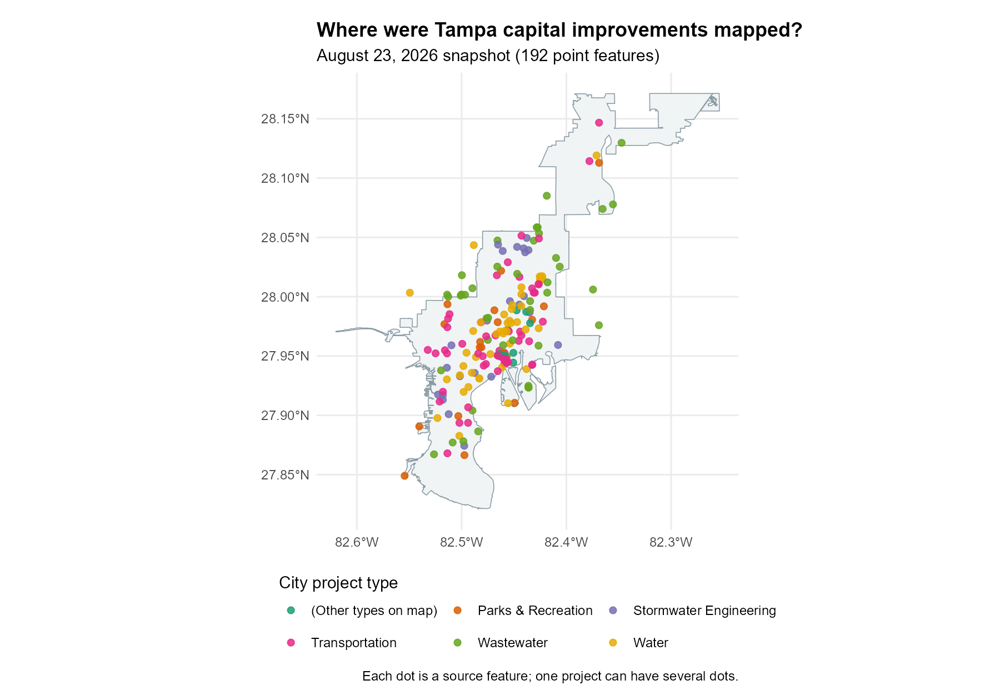
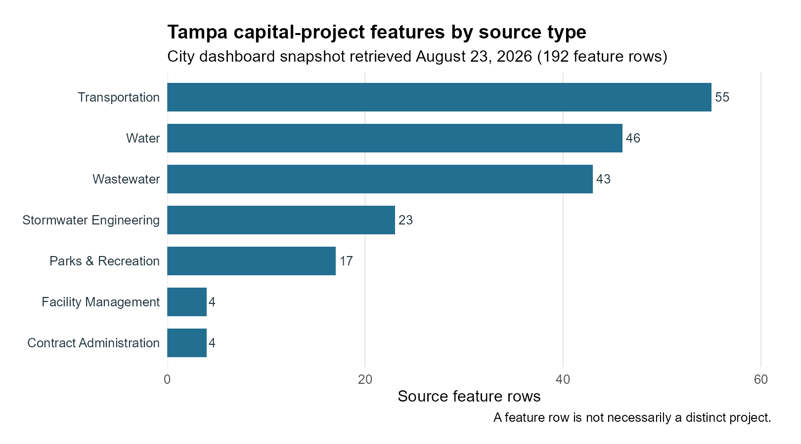

Where Are Tampa's Public Infrastructure Projects? Mapping Capital Improvements with R
Source:vignettes/mapping-capital-improvements.Rmd
mapping-capital-improvements.RmdIntroduction
Capital improvement projects are public investments in things such as streets, water systems, parks, and public buildings. A map can help us see where a city has recorded this work and which kinds of work appear in different places. It can also prompt useful questions about places that seem to have few mapped projects.
In this tutorial, you will use the tampaBayOpenData
package to find the City of Tampa’s public capital-project layer,
download its mapped locations, and color them by the project’s type as
recorded by the City. You will also make a small table of those types
and check whether multiple source rows share a project identifier. The
finished map shows locations, while the table counts source
feature rows. Neither is automatically a count of distinct
projects.
You need basic R data-frame skills, but no GIS experience. The
sf package holds shapes and coordinates, and
ggplot2 draws the map. The live-data steps are shown for
you to run in order in an internet-connected R session. They do not run
during ordinary package checks or website builds. If you have a local
copy of this repository and want to render the article with current City
data, run Sys.setenv(TAMPA_OPEN_DATA_LIVE = "true") in R
before calling
rmarkdown::render("vignettes/mapping-capital-improvements.Rmd").
Your results may differ as the City updates its data.
Find the data
Install the package and the two optional mapping packages if you need
them. knitr formats tables, and rmarkdown
renders the article.
install.packages("pak")
pak::pak("Jaclenga/tampaBayOpenData")
install.packages(c("sf", "ggplot2", "knitr", "rmarkdown"))Search the package’s checked catalog. This reads a
bundled list, so it does not contact a data publisher. The
jurisdiction argument keeps the search focused on
Tampa.
library(tampaBayOpenData)
project_matches <- tbod_search_datasets(
"capital", jurisdiction = "tampa", source = "checked"
)
knitr::kable(
project_matches[, c("id", "title", "publisher", "geometry_type")],
caption = "Checked Tampa capital-project data"
)| id | title | publisher | geometry_type |
|---|---|---|---|
| capital-projects | Capital improvement projects | City of Tampa | esriGeometryPoint |
The capital-projects entry is the City’s public-facing
capital-project point layer. A point marks an
individual location. A line could trace a road or pipe;
a polygon could outline a work area. The checked Tampa
catalog does not currently identify matching line or polygon
capital-project layers. The checked city-boundary
polygon is useful as a background, but it is not another set of
projects. Even when several shapes depict the same underlying work, they
should not be added together as separate projects.
Check the source note and saved field names before using them. The
verified date is when the package checked the endpoint, not
when each project was updated.
project_info <- tbod_dataset_info("capital-projects")
project_info[c("publisher", "source_url", "verified", "scope_note")]
#> $publisher
#> [1] "City of Tampa"
#>
#> $source_url
#> [1] "https://tampa.maps.arcgis.com/home/item.html?id=2226a20de08641e38cedd1c2d7cac69e"
#>
#> $verified
#> [1] "2026-09-29"
#>
#> $scope_note
#> [1] "The service description says its definition query selects Show to Public = Yes, while the layer metadata does not expose that definition expression. Coordinates use ArcGIS WKID 103023 / latestWKID 6443, in feet, rather than the Web Mercator CRS used by the other selected layers."
project_fields <- c("OBJECTID", "projid", "projtype", "Neighborhood")
project_schema <- tbod_schema("capital-projects")
stopifnot(all(project_fields %in% project_schema$fields$name))
project_schema$fields[
match(project_fields, project_schema$fields$name),
c("name", "alias", "type")
]
#> # A tibble: 4 × 3
#> name alias type
#> <chr> <chr> <chr>
#> 1 OBJECTID OBJECTID esriFieldTypeOID
#> 2 projid Project Identifier esriFieldTypeString
#> 3 projtype Project Type esriFieldTypeString
#> 4 Neighborhood Neighborhood esriFieldTypeStringOBJECTID identifies a map feature, projid
is a source project identifier, projtype contains the
City’s type label, and Neighborhood is the City’s
neighborhood label. We will use only these fields and the geometry,
which keeps the download small.
Download the data
tbod_get_dataset() retrieves the current records.
spatial = TRUE asks for an sf object: an
ordinary table with a geometry column. out_sr = 4326
requests latitude and longitude coordinates for both layers. We retrieve
all matching records because a limited preview would give misleading
category shares. The checked project layer had hundreds of features in
the repository’s dated example, rather than a large regional
inventory.
capital_projects <- tbod_get_dataset(
"capital-projects",
fields = project_fields,
spatial = TRUE,
out_sr = 4326,
total_timeout = 180
)
tampa_boundary <- tbod_get_dataset(
"city-boundary", fields = "OBJECTID",
spatial = TRUE, out_sr = 4326
)Stop with a clear message if either source has no features or if the download is incomplete. The package records its source and retrieval time; keep that information when sharing results. A server failure or changed field name also stops the example rather than creating a substitute dataset.
project_source <- tbod_provenance(capital_projects)
boundary_source <- tbod_provenance(tampa_boundary)
if (!isTRUE(project_source$complete) ||
!isTRUE(boundary_source$complete)) {
stop("A source download was incomplete; try again later.")
}
if (nrow(capital_projects) == 0 || nrow(tampa_boundary) == 0) {
stop("A source returned no map features; try again later.")
}
project_source[c("publisher", "source_url", "retrieved_at")]The two layers must use the same coordinate reference system, or CRS, to line up on the map. EPSG:4326 is the common latitude-longitude CRS requested above.
Prepare and categorize projects
Use the publisher’s projtype values as categories.
Trimming spaces makes labels consistent without guessing what a
description means. Missing or blank values get an explicit
(Missing source type) label. A check prevents that label
from merging with an actual source value. Add the source ID so it stays
clear where these records came from if you later combine data.
capital_projects$project_category <- trimws(
as.character(capital_projects$projtype)
)
missing_type <- is.na(capital_projects$project_category) |
capital_projects$project_category == ""
missing_label <- "(Missing source type)"
if (missing_label %in% capital_projects$project_category[!missing_type]) {
stop("The source uses the missing-type display label; choose another label.")
}
capital_projects$project_category[missing_type] <- missing_label
capital_projects$source_dataset <- "capital-projects"
sort(unique(capital_projects$project_category))The project identifier deserves a separate check. Blank identifiers are treated as missing. Repeated nonblank values suggest that one project may have several mapped points. Some nonblank values could also be placeholder codes; the City would need to confirm their meaning before anyone uses IDs to count distinct projects.
capital_projects$project_id <- trimws(as.character(capital_projects$projid))
blank_id <- is.na(capital_projects$project_id) |
capital_projects$project_id == ""
capital_projects$project_id[blank_id] <- NA_character_
known_ids <- capital_projects$project_id[
!is.na(capital_projects$project_id)
]
id_frequency <- table(known_ids)
data.frame(
check = c("Source feature rows", "Rows missing an ID", "IDs on multiple rows"),
value = c(nrow(capital_projects),
sum(is.na(capital_projects$project_id)),
sum(id_frequency > 1))
)These are checks on feature rows and ID values, not a project total. We do not combine this point layer with other project geometries or remove rows merely because an ID repeats.
Create an infrastructure project map
First remove points with missing geometry from the map. Keep them in the summary table: a record without coordinates still has a source category.
mapped_projects <- capital_projects[
!sf::st_is_empty(capital_projects),
]
if (nrow(mapped_projects) == 0) {
stop("No capital-project locations are available to map.")
}To keep the legend short, show the five most common named source
types among points with coordinates in their own
colors. Other named types share an (Other types on map)
color, while missing types retain their own label. This groups labels
for display only; the table below retains every source
type.
visible_type_counts <- as.data.frame(
table(mapped_projects$project_category),
stringsAsFactors = FALSE
)
names(visible_type_counts) <- c("project_category", "plotted_locations")
visible_type_counts <- visible_type_counts[
order(visible_type_counts$plotted_locations, decreasing = TRUE),
]
named_types <- visible_type_counts$project_category[
visible_type_counts$project_category != missing_label
]
top_types <- utils::head(named_types, 5)
other_label <- "(Other types on map)"
if (other_label %in% mapped_projects$project_category) {
stop("The source uses the map grouping label; choose another label.")
}
mapped_projects$map_category <- mapped_projects$project_category
other_type <- !mapped_projects$map_category %in%
c(top_types, missing_label)
mapped_projects$map_category[other_type] <- other_labelThe boundary is a light background. Project points sit on top and are
colored by the source type. ggplot2 handles the shared CRS,
and the legend names the displayed categories.
project_map <- ggplot2::ggplot() +
ggplot2::geom_sf(data = tampa_boundary, fill = "#F1F4F5",
color = "#8A9BA4", linewidth = 0.3) +
ggplot2::geom_sf(data = mapped_projects,
ggplot2::aes(color = map_category),
size = 1.8, alpha = 0.8) +
ggplot2::scale_color_brewer(palette = "Dark2", name = "Source project type") +
ggplot2::labs(
title = "Where are Tampa's mapped capital improvements?",
subtitle = "Public project locations from the City of Tampa",
caption = "Each dot is a mapped feature; one project can have several dots."
) +
ggplot2::theme_minimal(base_size = 12) +
ggplot2::theme(axis.title = ggplot2::element_blank())
print(project_map)The live code above creates a color-coded map from the checked
catalog layer. The map below provides a dated offline example using the
City’s related capital-project
dashboard point layer, saved in a public
GeoJSON archive on August 23, 2026 (retrieval
note). Its 192 points and their projtype labels were
saved together. As in the live code, the five most frequent types have
their own colors, and the remaining types share an
(Other types on map) color. The dashboard is a separate
City service from the checked capital-projects endpoint, so
its feature IDs and counts should not be combined with a current
download. The light backdrop is the checked Tampa city boundary.

Summarize the results
The table counts source feature rows by the City’s project-type label. It includes records without coordinates, so its counts may exceed the number of points on your live map. The first row identifies the most frequent label in your download; the answer can change as the publisher updates the layer.
category_summary <- as.data.frame(
table(capital_projects$project_category), stringsAsFactors = FALSE
)
names(category_summary) <- c("project_category", "feature_rows")
category_summary <- category_summary[
order(category_summary$feature_rows, decreasing = TRUE),
]
knitr::kable(
category_summary,
row.names = FALSE,
caption = "City project-type labels by source feature row"
)For a fixed example visible in this offline article, the small table below counts the 192 dashboard point features in the August 23 archive used for the color map. These are not counts from the checked catalog endpoint. Run the code above for current values from that endpoint.
| Source project type | Feature rows |
|---|---|
| Transportation | 55 |
| Water | 46 |
| Wastewater | 43 |
| Stormwater Engineering | 23 |
| Parks & Recreation | 17 |
| Facility Management | 4 |
| Contract Administration | 4 |
Transportation has the most source feature rows in this snapshot (55), followed by Water (46) and Wastewater (43). The bar chart repeats those counts; the color map shows where the same archived features were recorded.

In the dated map, many dots cluster in central Tampa. Transportation and Wastewater points also appear farther north and south. These are visual impressions of published feature locations, not measured investment levels.
The City’s Neighborhood field offers another simple view
of concentration. The first row in this table has the most source
feature rows with that label. These labels are not a spatial
calculation, and some may be blank or missing.
capital_projects$source_neighborhood <- trimws(
as.character(capital_projects$Neighborhood)
)
missing_neighborhood <- is.na(capital_projects$source_neighborhood) |
capital_projects$source_neighborhood == ""
missing_neighborhood_label <- "(Missing neighborhood)"
if (missing_neighborhood_label %in%
capital_projects$source_neighborhood[!missing_neighborhood]) {
stop("The source uses the missing-neighborhood display label; choose another.")
}
capital_projects$source_neighborhood[missing_neighborhood] <-
missing_neighborhood_label
neighborhood_summary <- as.data.frame(
table(capital_projects$source_neighborhood), stringsAsFactors = FALSE
)
names(neighborhood_summary) <- c("source_neighborhood", "feature_rows")
neighborhood_summary <- neighborhood_summary[
order(neighborhood_summary$feature_rows, decreasing = TRUE),
]
knitr::kable(utils::head(neighborhood_summary, 10), row.names = FALSE)Look at the map to see whether some category colors are concentrated or spread across Tampa. A cluster means more features are mapped there, not necessarily more distinct projects or dollars. A project may have several locations, and source coverage may vary by area. The map does not show funding amounts, construction progress, or completed infrastructure.
Limitations and next steps
This is the City’s public-facing capital-project layer, not a complete capital ledger. The checked catalog’s verification date does not measure the freshness of every record. Labels, identifiers, and locations can be missing or updated; one project may have multiple point features. The boundary is a shoreline-adjusted map representation, not a legal survey. Geographic concentration alone cannot establish whether investment is fair: population, need, project size, cost, and unmapped work would matter too.
To adapt this workflow, search the checked catalog for another topic or publisher, inspect its source note and schema, then change the dataset ID and field names. A true line or polygon project layer would need its own source review and map symbol. Before combining layers, check whether their features share project identifiers. The advanced infrastructure article explores ID, status, phase, and cost fields in more detail.